Tool 01 · The Complete A4 Toolkit
All 34 tools by A4 stage, with page counts, the old-number lookup and where to start.
13 pages, PDF
Assessments, templates and playbooks from AI-First: Building the Central Nervous System of the Modern Enterprise, grouped by A4 stage, so your team can pick up the tool that fits the decision in front of it.
Rebuilt as version 2.0 in November 2026. Tool 01 maps every earlier file to its new number.

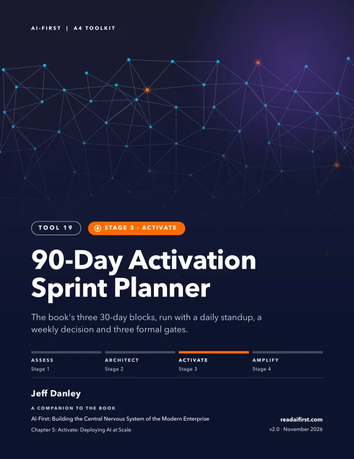
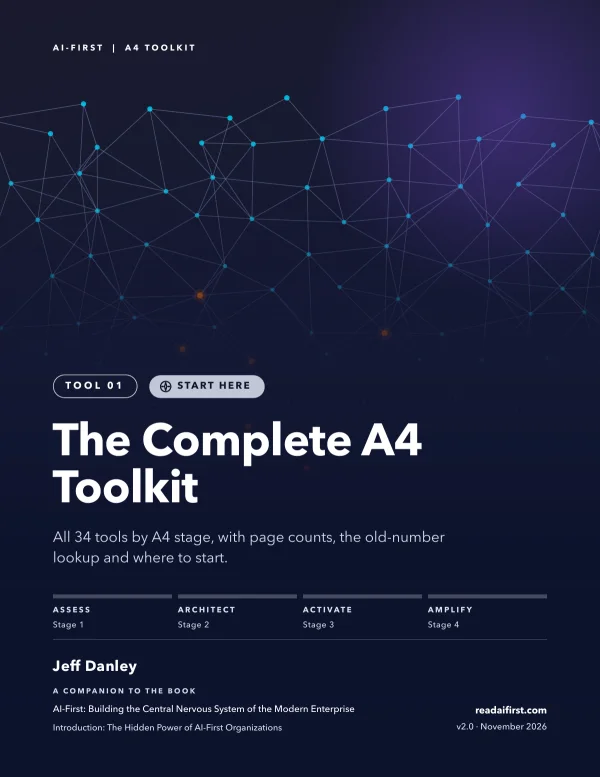
The six Start Here tools are free with no email. One address unlocks the rest, plus the Tool 09 spreadsheet, and adds you to The Executive Briefing.
If you’re new to A4, start here. These six give you the whole framework on a few pages, five questions to ask yourself, your first moves, and everything you need to run a two-hour leadership session yourself. No email required.
All 34 tools by A4 stage, with page counts, the old-number lookup and where to start.
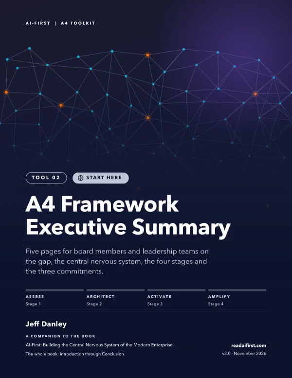
A short read for board members and leadership teams on the gap, the Central Nervous System, the four stages and the three commitments.

Five questions from Chapter 7 that show the gap between where you lead from today and where you need to be.

The book’s ten first actions in four horizons, from scheduling the leadership session to launching the assessment.
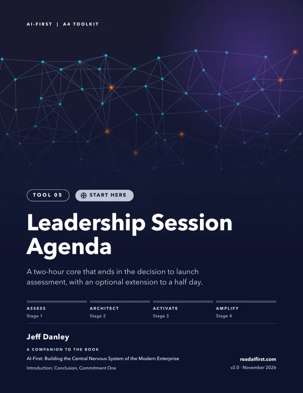
A two-hour core that ends in the decision to launch assessment, with an optional extension to a half day.
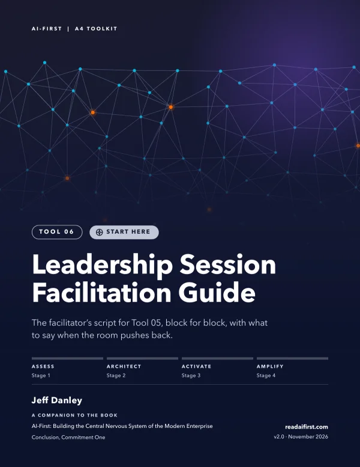
The facilitator’s script for Tool 05, block for block, with what to say when the room pushes back.
Find out where you really stand. These eight score your readiness, name the traps, rank your initiatives and finish with the AI Readiness Report your board will read.
More on the Assess stageTen questions that place your organization as Traditional, AI-Enabled or AI-First, and tell you where to start.
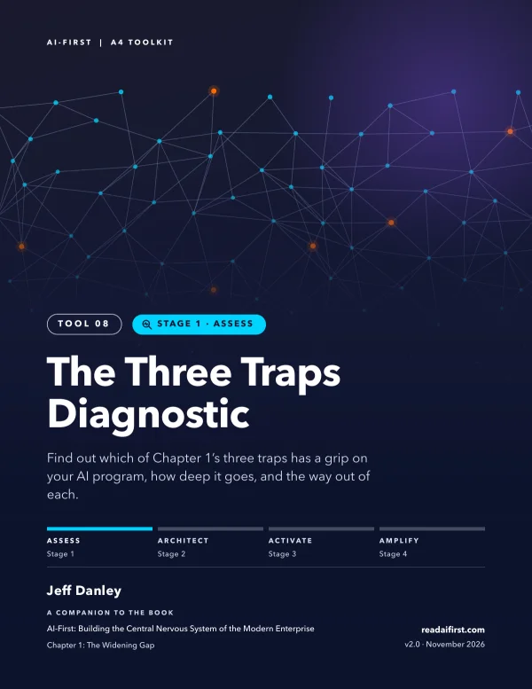
Find out which of Chapter 1’s three traps has a grip on your AI program, how deep it goes, and the way out of each.

How a modest lead becomes an uncatchable one, worked through with your own numbers. A PDF guide plus a spreadsheet.
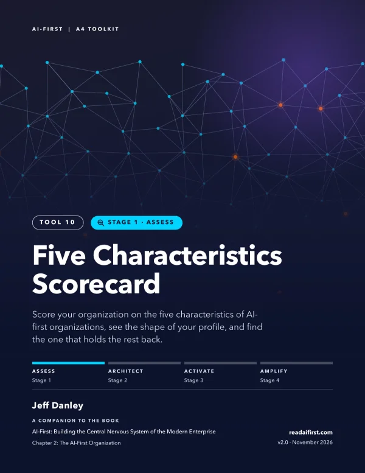
Score your organization on the five characteristics of AI-first organizations, see the shape of your profile, and find the one that holds the rest back.

The book’s twenty readiness questions across data, talent, process and culture, scored 0 to 100 per foundation.

The book’s twelve-week assessment program, week by week, with the team, the gates and the decisions that close it.

Score every AI initiative on the book’s 2x2, map what depends on what, and choose the one that enters the 90-Day Activation Sprint.

The output of the Assess stage in the book’s six sections, led by a one-page executive summary.
Design the structure, data flow and governance before you scale. These four take you from a 90-day roadmap to an AI-First Blueprint your executive team can defend.
More on the Architect stage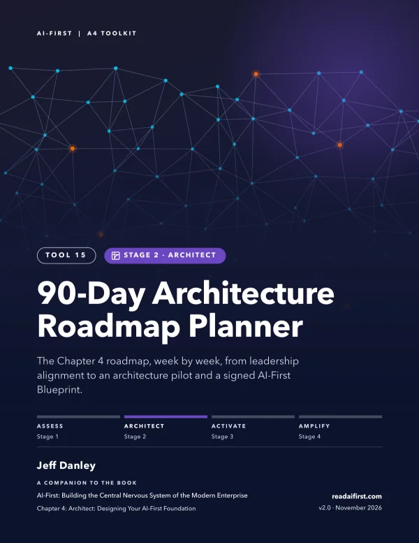
The Chapter 4 roadmap, week by week, from leadership alignment to an architecture pilot and an AI-First Blueprint the leadership team agrees on.
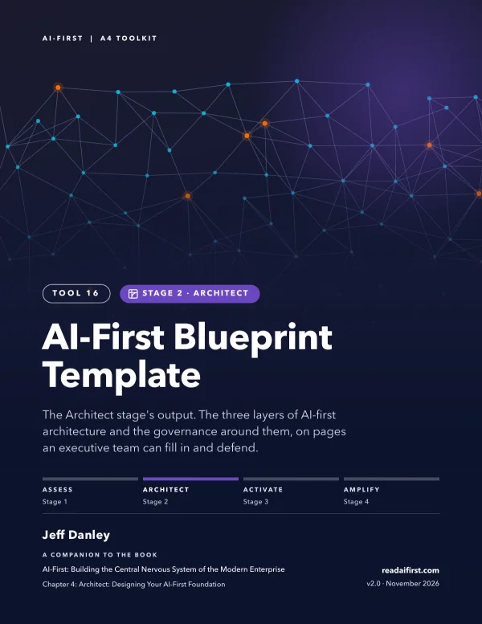
The Architect stage’s output. The three layers of AI-first architecture and the governance around them, on pages an executive team can fill in and defend.
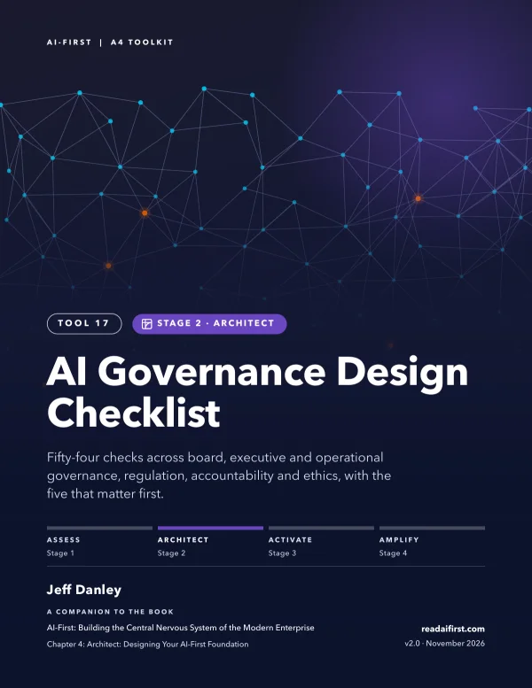
Fifty-four checks across board, executive and operational governance, regulation, accountability and ethics, with the five that matter first.
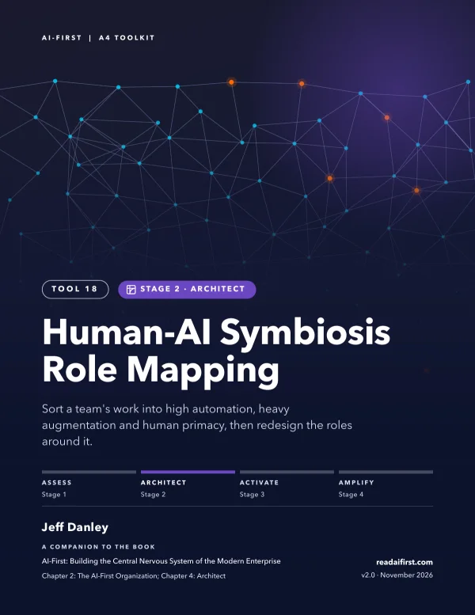
Sort a team’s work into high automation, heavy augmentation and human primacy, then redesign the roles around it.
Get one initiative into production in a quarter. The sprint planner sets the clock, and the other three define what winning looks like and how you’ll measure it.
More on the Activate stageThe book’s three 30-day blocks, run with a daily standup, a weekly decision and three formal gates.
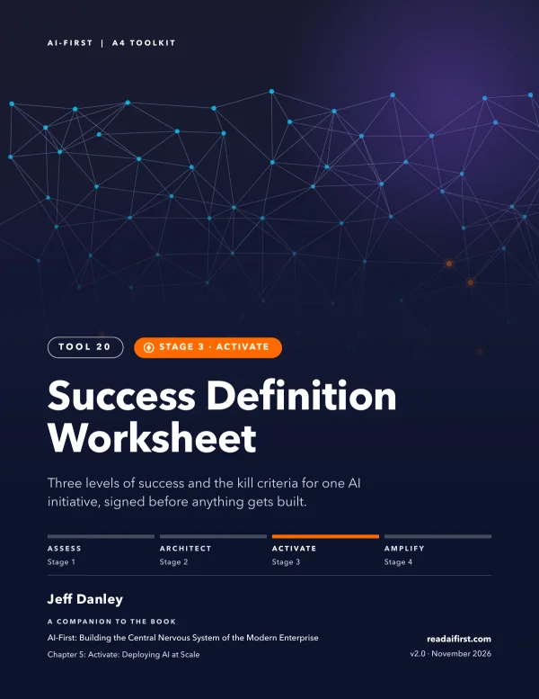
Three levels of success and the kill criteria for one AI initiative, agreed before anything gets built.
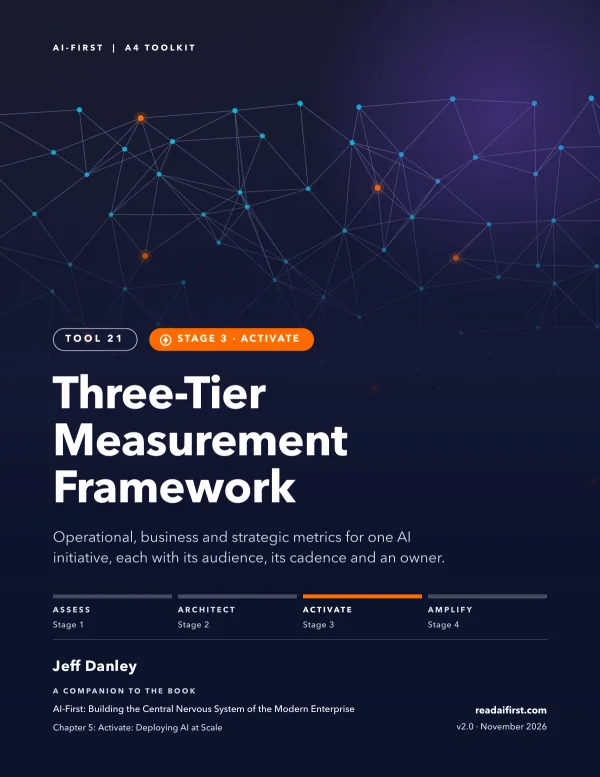
Operational, business and strategic metrics for one AI initiative, each with its audience, its cadence and an owner.
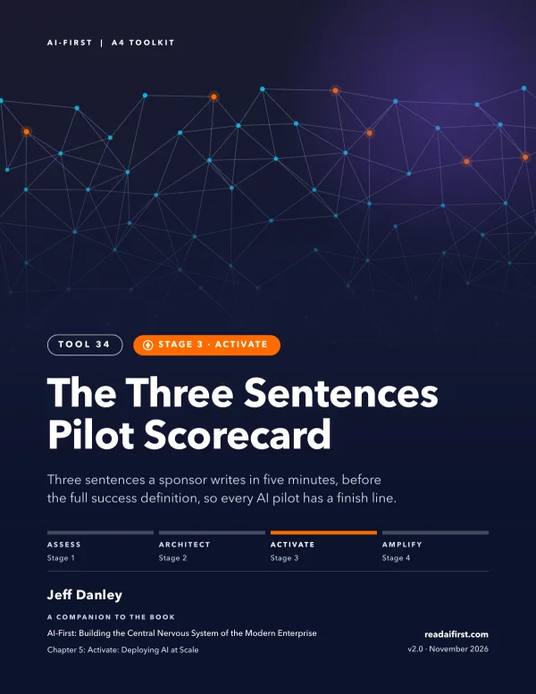
Three sentences a sponsor writes in five minutes, before the full success definition, so every AI pilot has a finish line.
These four help you spread what works: leading the culture change, answering resistance, building AI literacy and bringing each group of employees along at the right time.
More on the Amplify stage
Taskforce formation, culture shift, hiring integration and organizational redesign, in the order Chapter 6 teaches them.

Find out which kind of resistance is slowing adoption, then apply the antidote that fits it.
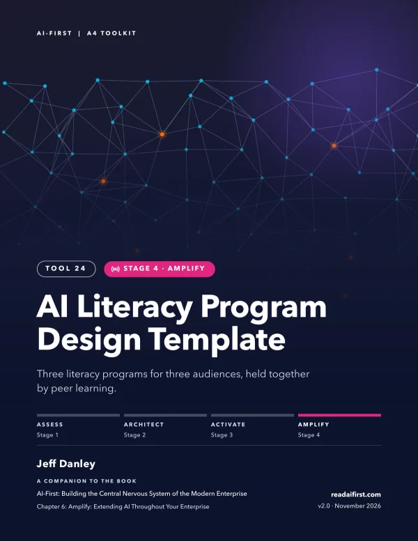
Three literacy programs for three audiences, held together by peer learning.

Enthusiasts first, then pragmatists, then skeptics, then laggards. A guide to sequencing who you work with and when.
Chapter 7 starts with the leader. One tool shows where you are as an AI leader, and the other gives you twelve weeks to move up a stage.
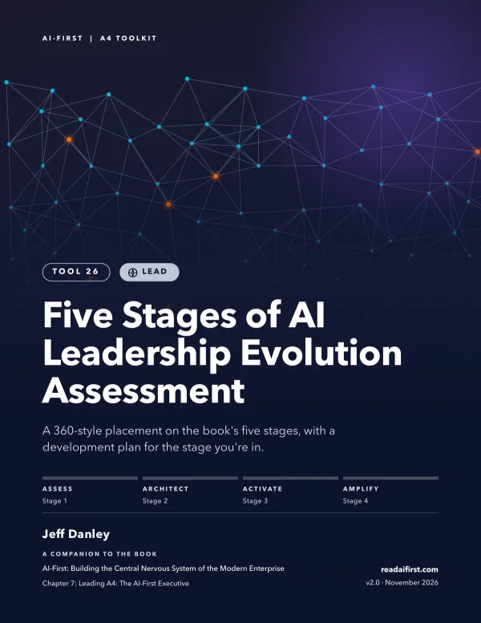
A 360-style placement on the book’s five stages, with a development plan for the stage you’re in.
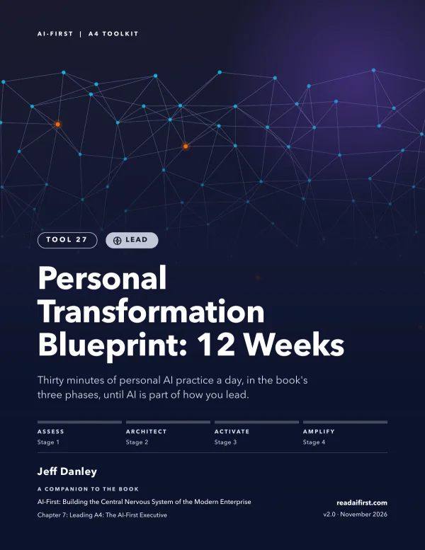
Thirty minutes of personal AI practice a day, in the book’s three phases, until AI is part of how you lead.
Every program takes a hit eventually. These three help you name the injury, recover in weeks instead of quarters, and test a system before it launches.
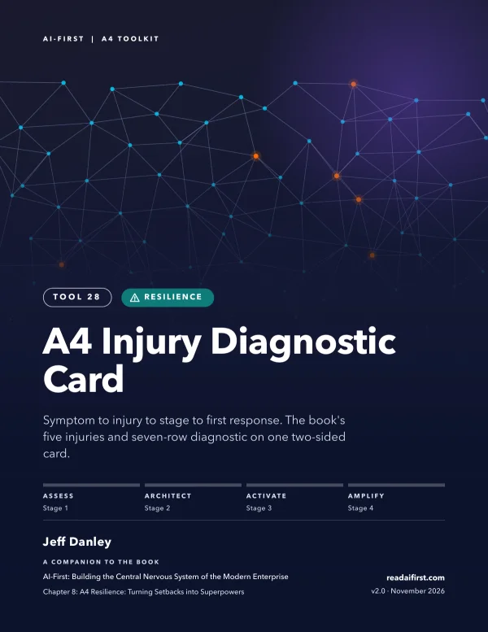
Symptom to injury to stage to first response. The book’s five injuries and seven-row diagnostic on one two-sided card.
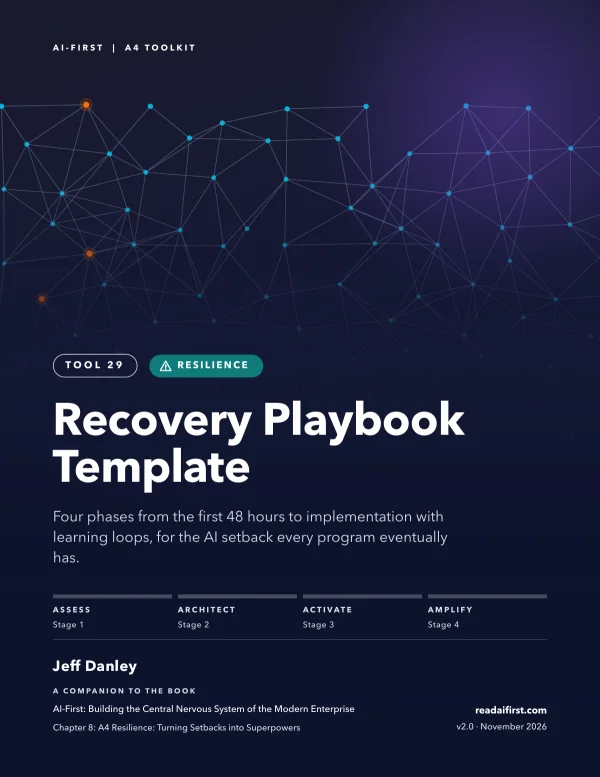
Four phases from the first 48 hours to implementation with learning loops, for the AI setback every program eventually has.
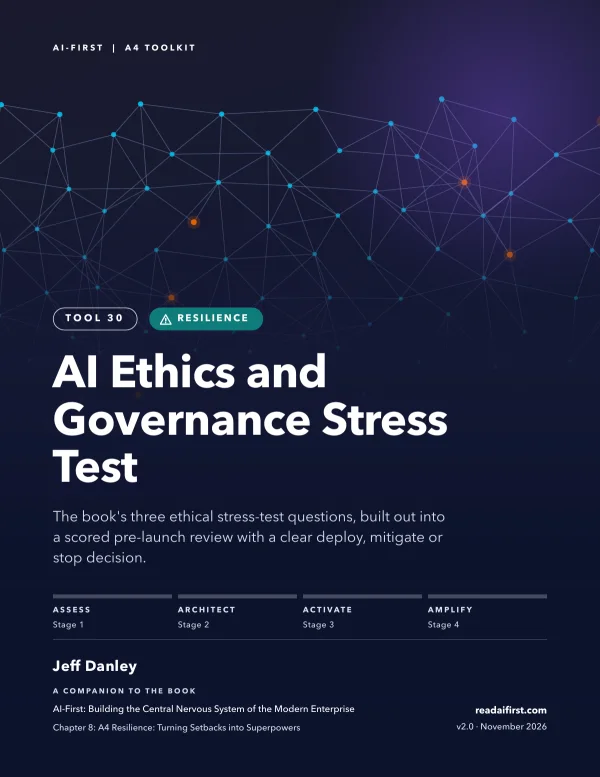
The book’s three ethical stress-test questions, built out into a scored pre-launch review with a clear deploy, mitigate or stop decision.
For the three-year view. Assess the advantages you’re building, map the roadmap, and see how fourteen companies from the book did it.
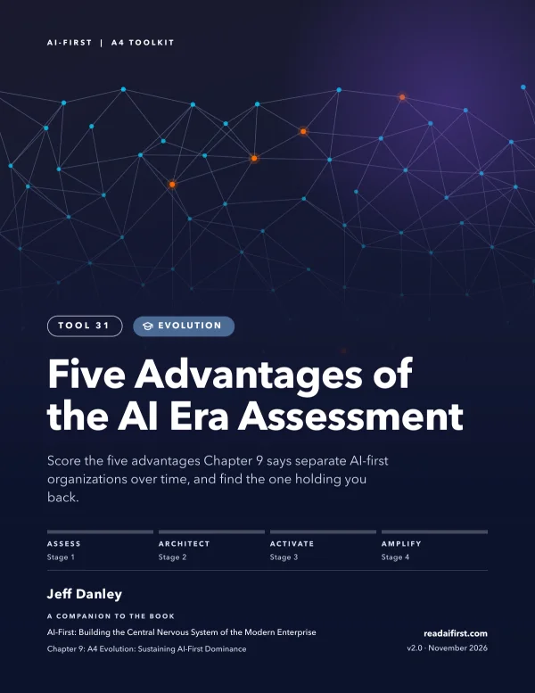
Score the five advantages Chapter 9 says separate AI-first organizations over time, and find the one holding you back.
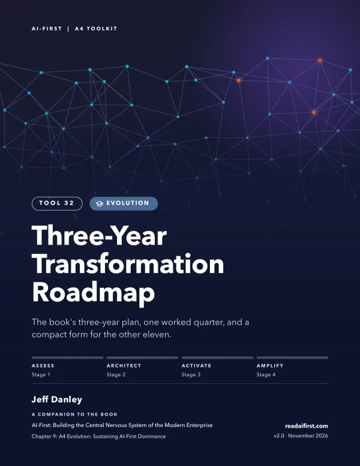
The book’s three-year plan, one worked quarter, and a compact form for the other eleven.
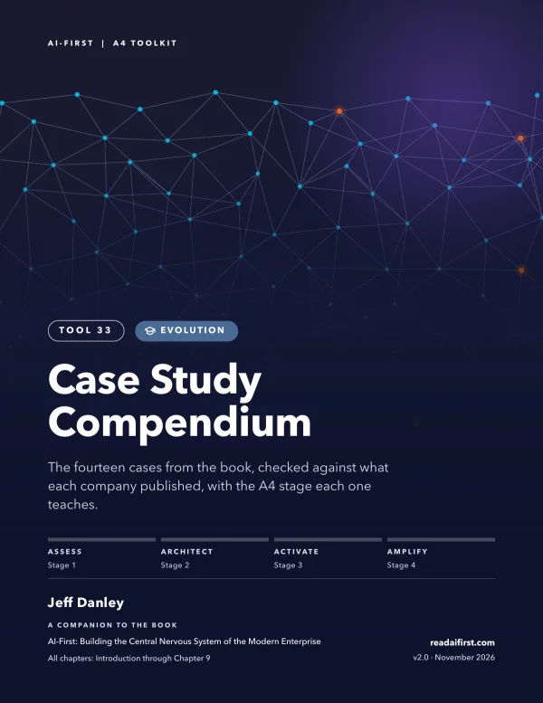
The fourteen cases from the book, checked against what each company published, with the A4 stage each one teaches.
Prefer to see your numbers first? The Value Capture Calculator takes about two minutes.